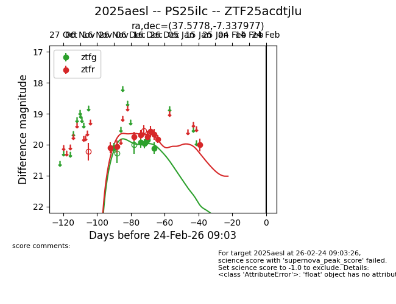
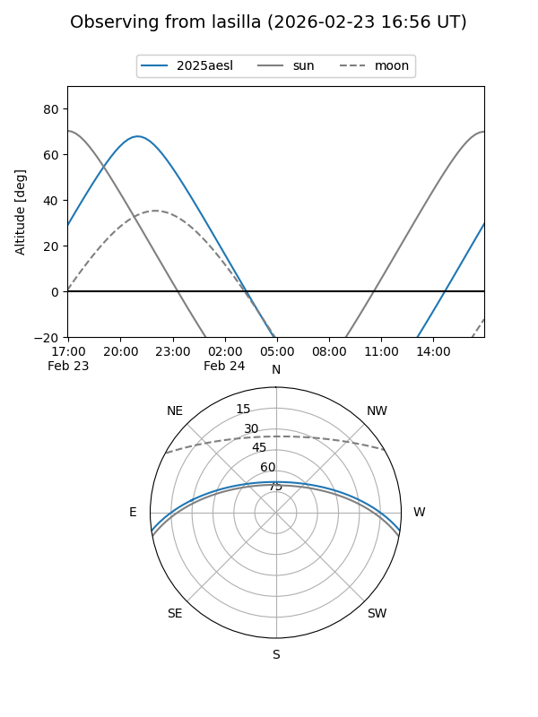
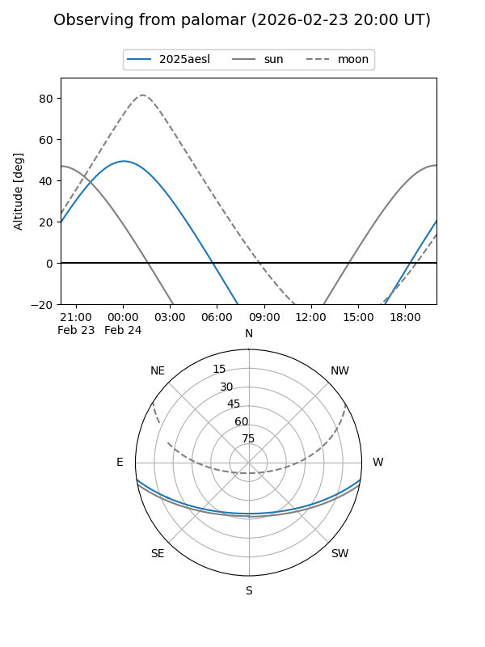
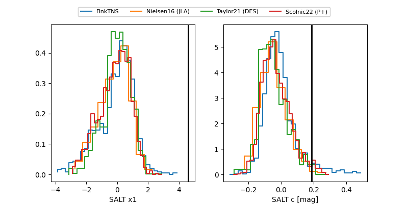

2025aesl
Target 2025aesl at 2025-12-18 11:18
Aliases and brokers:
FINK: fink-portal.org/ZTF25acdtjlu
Lasair: lasair-ztf.lsst.ac.uk/objects/ZTF25acdtjlu
ALeRCE: alerce.online/object/ZTF25acdtjlu
TNS: wis-tns.org/object/2025aesl
YSE: ziggy.ucolick.org/yse/transient_detail/2025aesl
alt names
ZTF25acdtjlu (ztf,fink_ztf)
2025aesl (tns,yse)
PS25ilc (panstarrs)
Coordinates:
equatorial (ra, dec) = 37.5778,-7.33798
equatorial (HMS+DMS) = 02:30:18.68,-07:20:16.72
galactic (l, b) = (177.3118,-59.32335)
Photometry
last ztfg=19.85, ztfr=19.74
4 ztfg, 5 ztfr detections
Lightcurve

Visibility


Additional plots
